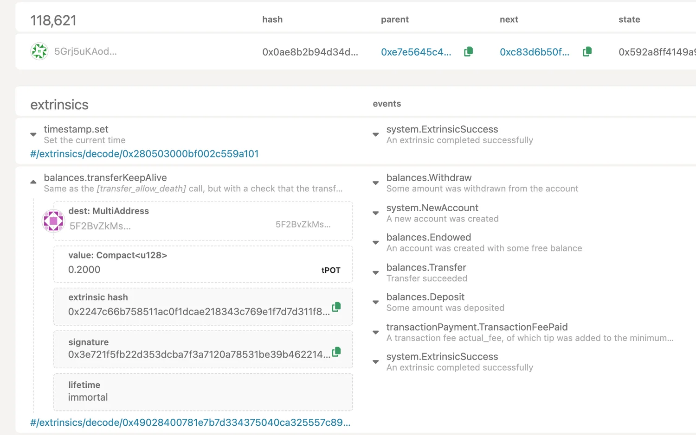
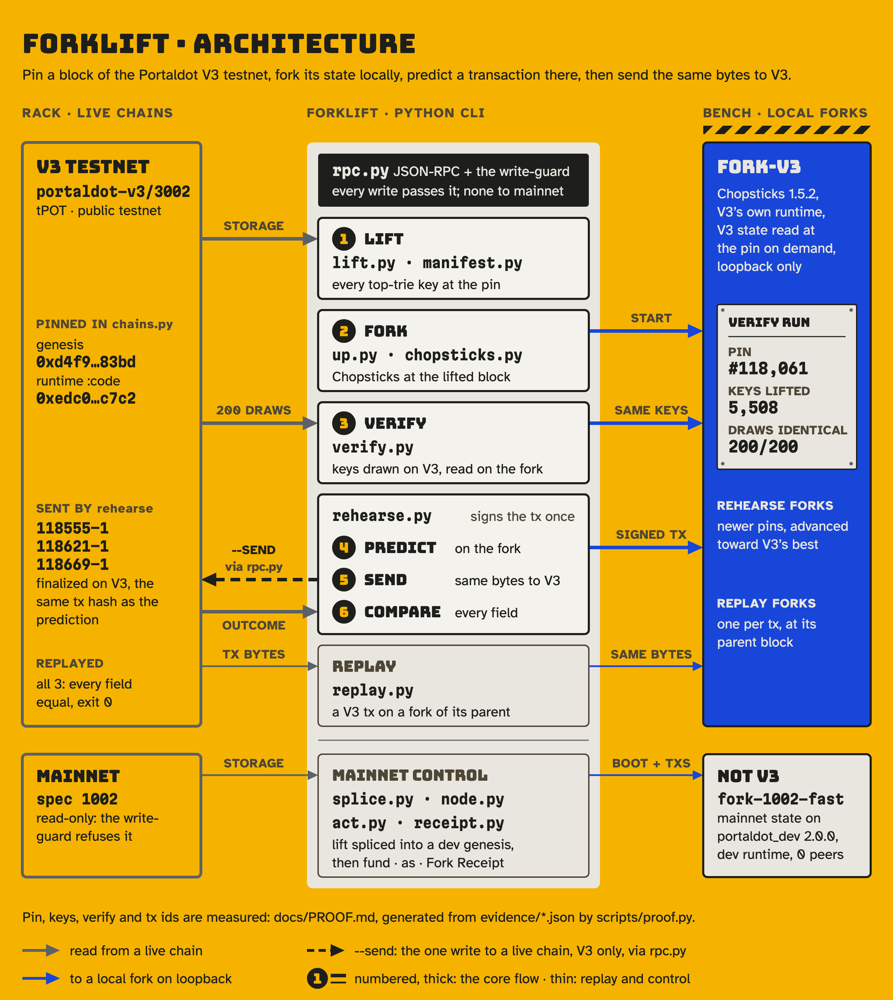

Lift
Reads every top-trie key of the live chain at one pinned block hash and hashes every key and value into a manifest_root.
#118,061 · 5,508 keys · 4.83 s · two runs, the same root
state_getKeysPaged @ #118,061Before you send a call to the Portaldot V3 testnet, Forklift lifts the live chain at one pinned block onto your machine (5,508 keys at #118,061), checks the fork against the chain (200/200 identical), signs once, and runs those exact bytes on the fork. Then it sends them to V3 and shows you every field that moved.
forklift up --target v3 --at head --name v3Data plate · Portaldot V3 testnet · run 2026-10-20
Two lifts of the same block, the same manifest_root.
verify --sample 200 exits 0.
Same tx hash on the fork and on V3, each time.
Re-run on its parent block, fee to the planck. The other two: 10/10, 14/14.
Forklift signed a 0.2 tPOT transfer once, ran it on a fork of V3, then sent the same bytes to the V3 testnet. Left: the block the chain recorded. Right: what the CLI printed.

$ forklift rehearse Balances.transfer_keep_alive --args '{"dest": "5F2BvZkMsEYF8ua1M2xkLt1XqjCb4YYuBZvNEWTWhtzbBjus", "value": 20000000000000}' --signer "$SIGNER" --name v3 --send rehearse Balances.transfer_keep_alive as 5EnCf9PauY6RtW5jCTxCXQFCMEo5U2kP3pLexZahX1HCejvg (nonce 1) · Portaldot V3 testnet fork 118618-1 ok · fee 0.01480596076462 tPOT · Balances.Withdraw, System.NewAccount, Balances.Endowed, Balances.Transfer, Balances.Deposit, TransactionPayment.TransactionFeePaid, System.ExtrinsicSuccess tx 0x2247c66b758511ac0f1dcae218343c769e1f7d7d311f84a22ee71d9673fdc36f Δ 5EnCf9Pa… -0.21480596076462 tPOT Δ 5F2BvZkM… 0.2 tPOT chain #118,621 118621-1 ok · finalized · fee 0.01480596072802 tPOT · tx 0x2247c66b758511ac0f1dcae218343c769e1f7d7d311f84a22ee71d9673fdc36f block 0x0ae8b2b94d34dc27fd931b8095654675510dc53533582ad0cad19712591db8a9 https://node-console.portaldot.dev/?rpc=wss%3A%2F%2Ftest-node-v3.portaldot.dev#/explorer/query/0x0ae8b2b9… compare 8/14 fields match · DIFFERS: event[0] Balances.Withdraw, event[4] Balances.Deposit, event[5] TransactionPayment.TransactionFeePaid, inclusion_height, fee, delta 5EnCf9PauY6RtW5jCTxCXQFCMEo5U2kP3pLexZahX1HCejvg $ echo $? 7 $ forklift replay 118621-1 replay 118621-1 on Portaldot V3 testnet · signer 5EnCf9PauY6RtW5jCTxCXQFCMEo5U2kP3pLexZahX1HCejvg fork @acala-network/chopsticks@1.5.2 at the parent block #118,620 0xe7e5645c45500f61cb8a5f6c5dad696dc73614e12dffbcb19f0f5931a6c77754 chain 118621-1 ok · fee 0.01480596072802 tPOT · tx 0x2247c66b758511ac0f1dcae218343c769e1f7d7d311f84a22ee71d9673fdc36f replay 118621-1 ok · fee 0.01480596072802 tPOT · tx 0x2247c66b758511ac0f1dcae218343c769e1f7d7d311f84a22ee71d9673fdc36f compare 14/14 fields match $ echo $? 0
The output lines are forklift's own formatters applied to the recorded runs in evidence/rehearse-v3.json (recorded 2026-10-20 14:44:20 UTC) and evidence/replay-v3.json; the command lines are rebuilt from the recorded call and arguments. Exit 7 means the chain differed from the prediction, and every differing field is listed.
The fork predicted inclusion at #118,618. V3 included it three blocks later, and the fee came in 3,660 planck lower. Replayed on its parent block, the fee matches to the planck.
Each verb is one command in a Python CLI. Lift and verify read the live chain at a pinned block hash; only rehearse --send writes, and only to V3.
Reads every top-trie key of the live chain at one pinned block hash and hashes every key and value into a manifest_root.
#118,061 · 5,508 keys · 4.83 s · two runs, the same root
state_getKeysPaged @ #118,061Runs V3's own runtime wasm on your machine. The fork must serve V3's genesis and start at the lifted block.
Chopsticks 1.5.2Draws keys on the live chain, reads each on both sides, and exits 0 only when they agree.
verify --sample 200Signs once and applies those bytes on the fork: events, fee, balance deltas. With --send, the same bytes go to V3 and the two outcomes are compared field by field.
Re-applies any V3 extrinsic's own bytes on a fork of its parent block and checks the fork against what the chain recorded.
replay 118621-1 · 14/14Nothing is ever submitted to mainnet. A fork client refuses any non-loopback endpoint. rehearse --send is the one path to a real chain, and it sends only to V3.
Chains on the left are read at a pinned block hash. Forks on the right run on loopback. Every box in the middle names a file in forklift/.

forklift/*.py. Mainnet (spec 1002) is a read-only control path, labelled "not V3".Full size ↗A truck's data plate says what it cannot lift. These three lines are quoted from the README, word for word.
It is a sample, not a proof of every key.README · Solution, step 3
If the chain includes it later, the fee may differ andREADME · Boundariesrehearsesays so (exit7); it never adjusts a prediction after the fact.
A V3 fork is Chopsticks, not a V3 node.README · Boundaries
The three sent transactions are on the public V3 testnet (portaldot-v3/3002), with node-console links in docs/PROOF.md. The fork is fork-v3: V3's runtime under Chopsticks, not a V3 node. The mainnet path, fork-1002-fast, is labelled "not V3" everywhere.
Fees move every block on V3: TransactionPayment.NextFeeMultiplier changed between every pair of 20 consecutive blocks. The three transactions landed 3 to 9 blocks after the predicted block, and their fees differed by 3,660 to 8,269 planck. Replayed at their parent blocks, all three match the chain to the planck (10/10, 14/14, 16/16).
It only reads mainnet, at a fixed block hash. A fork client refuses any endpoint that is not a loopback fork, and rehearse --send sends only to V3.
No. verify samples 200 keys on the live chain, then compares the fork's whole key set with the lift (5,508 = 5,508) and every lifted value: 5,497 identical. The other 11 are child-trie roots, which the fork reads as null; verify counts and lists them. Child tries are not lifted.
Nothing on the demo path. There is no hosted fork and no web app: Forklift is a CLI, and the fork runs on your machine.
Clone the repo, then pip install -e '.[dev]'. Run forklift up --target v3 --at head --name v3, then forklift verify --name v3 --sample 200, then forklift rehearse System.remark …. V3 forks need Node.js 18+ for Chopsticks. The README's Installation section has every flag.
MIT licensed. 257 offline tests and 6 live tests. Every figure on this page traces to docs/PROOF.md, a file in evidence/, or the README.